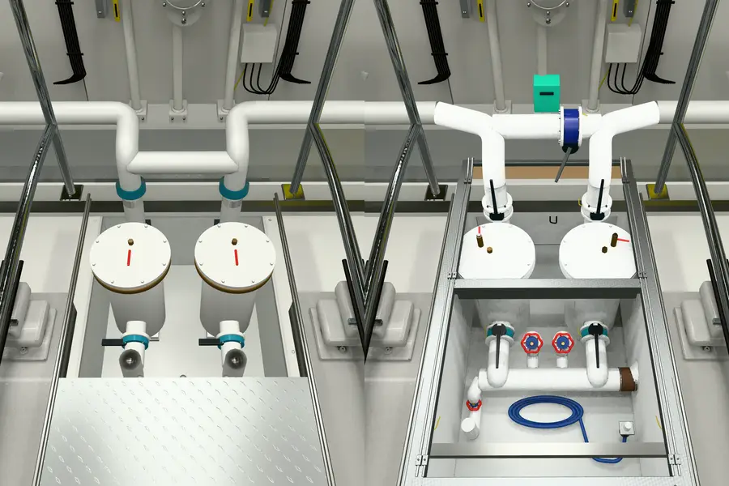

Se reconstruyó solamente el compartimento bajo el piso: marco, cuerpos huecos, tapas, puente con válvula azul, mandos negros, colector, volantes, conexiones y manguera enrollada. Los motores conservan sus activos anteriores.
Software anterior / candidato, desde la misma cámara estimada:

La comparación con la fotografía aportada es privada: cuadros nativos de 8 × 8 px y 4 × 4 px en detalles; 56.680 celdas medidas. Generar una celda no equivale a aceptarla. No se afirma coincidencia fotogramétrica ni de todos los detalles a cuatro píxeles.
El conjunto tiene 27.668 triángulos, sin triángulos duplicados ni degenerados. La abertura bloquea la caminata con 14 cm de margen. Se comprobaron ambos filtros, extracción, estados limpio/sucio, fallos de carga, cancelación, reintento y tres ciclos de salida y regreso.
Movimiento y reposo: mismo buffer y cero píxeles distintos desde idéntica cámara. Chromium/SwiftShader acredita corrección; no es una medición de FPS en GPU real.
Profundidades, apoyos y tramos ocultos son estimaciones. El desgaste fino, algunos racores y la iluminación todavía difieren de la foto. La estrategia protegida, los 629 archivos del yate original y los 73 activos mecánicos protegidos se conservaron.